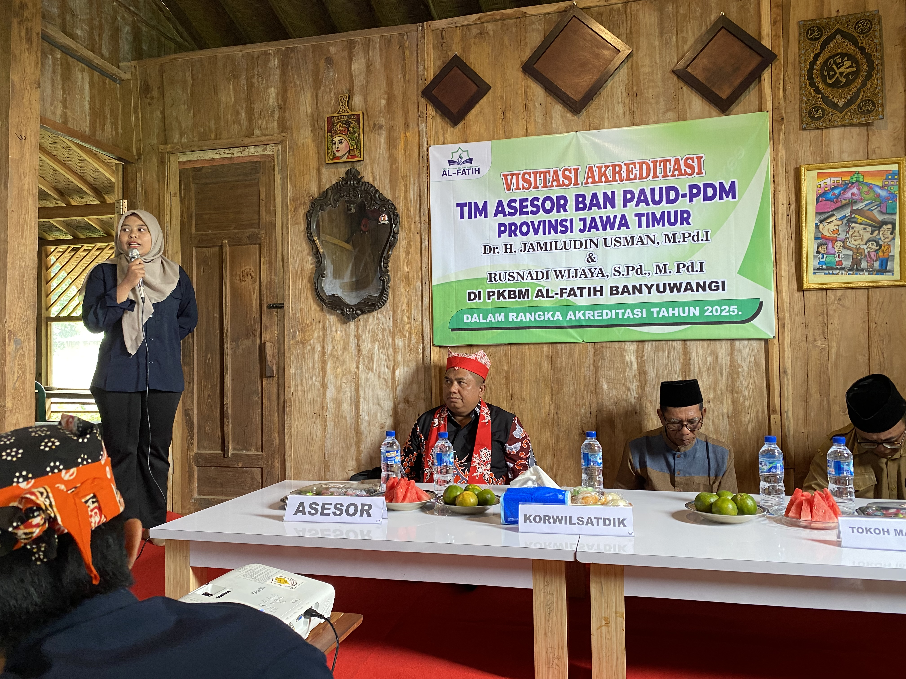

Pendidikan Kesetaraan Paket C
Program Paket C adalah program pendidikan kesetaraan yang setara dengan jenjang Sekolah Menengah Atas (SMA) atau Madrasah Aliyah (MA). Ini adalah program paling populer di PKBM AL-FATIH, diminati oleh pekerja, wirausahawan, dan calon mahasiswa yang ingin melanjutkan ke perguruan tinggi.
Ijazah Paket C diakui sepenuhnya oleh negara dan dapat digunakan untuk melamar pekerjaan, mengikuti seleksi masuk perguruan tinggi (SNBT/SNBP), serta persyaratan administrasi lainnya.
Alumni kami berhasil diterima di perguruan tinggi negeri melalui jalur SNBT dengan ijazah Paket C.

Durasi Program
1 – 2 tahun (dapat dipercepat)
Kurikulum
Merdeka Belajar (Kemendikdasmen RI)
Sistem Belajar
Tatap muka dan mandiri (hybrid)
Ijazah
Diakui setara SMA/MA, bisa untuk PTN
Program Ini untuk Siapa?
-
Lulusan SMP/Paket B yang ingin melanjutkan ke jenjang menengah atas
-
Karyawan atau pekerja yang ingin meningkatkan jenjang karir dengan ijazah SMA
-
Calon mahasiswa yang ingin mengikuti seleksi masuk PTN (SNBT/SNBP) melalui jalur kesetaraan
-
Wirausahawan yang membutuhkan ijazah SMA untuk persyaratan izin usaha atau kemitraan
-
TNI/Polri atau PNS calon yang memerlukan ijazah SMA sebagai syarat administrasi
Persyaratan Pendaftaran
-
1
Fotokopi ijazah SMP, MTs, atau Sertifikat Paket B
-
2
Fotokopi Kartu Tanda Penduduk (KTP) yang masih berlaku
-
3
Pas foto terbaru ukuran 3x4 sebanyak 2 lembar (background merah)
-
4
Surat keterangan pindah dari sekolah asal (jika sebelumnya sempat bersekolah di SMA/SMK)
-
5
Mengisi formulir pendaftaran resmi dari PKBM AL-FATIH
Mata Pelajaran

Rina Wulandari
Alumni Paket C 2024
"Saya tidak menyangka bisa diterima di universitas negeri setelah mendapat ijazah Paket C. PKBM AL-FATIH benar-benar membuka jalan untuk masa depan saya."

Budi Santoso
Alumni Paket C 2024, Karyawan Swasta
"Belajarnya fleksibel, tidak mengganggu pekerjaan saya. Sekarang sudah bisa naik jabatan karena sudah punya ijazah SMA."

Siti Aminah
Alumni Paket C 2023, Ibu Rumah Tangga
"Meski sudah berkeluarga dan punya anak, saya tetap bisa ikut program ini. Para tutor sangat suportif dan materi mudah dipahami."
Program Paling Banyak Diminati
Paket C adalah pilihan terbaik untuk membuka peluang karir, melanjutkan ke PTN, atau memenuhi persyaratan administrasi. Kuota terbatas setiap gelombang.